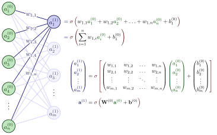
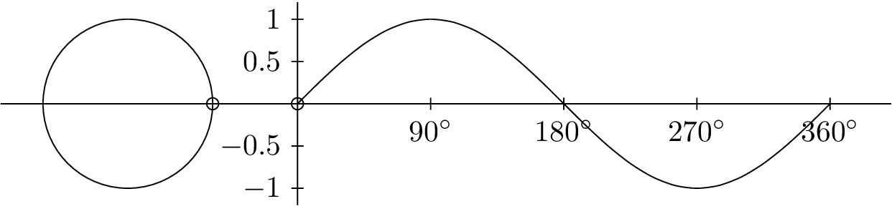

Learning TikZ#
TikZ is a powerful tool that can be used to make beautiful pictures. However, there is a steep learning curve to get very good at TikZ. In this article, I note down everything I learn about TikZ
Editing tikz code cells is not yet supported in this website. Its a work in progress!
Warning
This article might be too long when its finished. Feel free to skip through sections using navigation the right side.
Resources used#
TikZ and PGF manual (1300+ pages 😱!!!) (Most of this article’s content will be from here).
What is TikZ and what can it do?#
Show code cell source
%%tikz -as=f
\documentclass{standalone}
\usepackage{pgfplots}
\begin{document}
\begin{tikzpicture}
\begin{axis}[ domain=-5:5, domain y=-5:5, title=Basic surface plot ]
\addplot3[surf,samples=25] { x^2+y^2 };
\end{axis}
\end{tikzpicture}
\begin{tikzpicture}
\begin{axis}[ domain=-5:5, domain y=-5:5 ]
\addplot3[
surf,
opacity=0.5,
samples=40
] {sin(deg(x))*sin(deg(y))};
\end{axis}
\end{tikzpicture}
\begin{tikzpicture}
\begin{axis}[ domain=-5:5, domain y=-5:5, title=Mesh ]
\addplot3[ mesh, samples=25 ] { x^2*y };
\end{axis}
\end{tikzpicture}
\begin{tikzpicture}
\begin{axis}[
title=No axes and custom colormap plus many samples,
hide axis,
mesh/interior colormap = {purpleyellow}{color=(purple) color=(yellow)},
colormap/blackwhite
]
\addplot3[domain=-2:2,surf,samples=50] {-exp(-x^2-y^2)};
\end{axis}
\end{tikzpicture}
\begin{tikzpicture}
\begin{axis}[
title=Filled background and full grid,
axis background/.style={fill=green!10},
3d box=complete*,
grid=major,
colorbar % show key
]
\addplot3[surf] {{sin(deg(x)) * y*(1-y)}};
\end{axis}
\end{tikzpicture}
\end{document}

Show code cell source
%%tikz -as=f
\documentclass[border=3pt,tikz]{standalone}
\usepackage{amsmath} % for aligned
\usepackage{listofitems} % for \readlist to create arrays
\usetikzlibrary{arrows.meta} % for arrow size
\usepackage[outline]{contour} % glow around text
\contourlength{1.4pt}
% COLORS
\usepackage{xcolor}
\colorlet{myred}{red!80!black}
\colorlet{myblue}{blue!80!black}
\colorlet{mygreen}{green!60!black}
\colorlet{myorange}{orange!70!red!60!black}
\colorlet{mydarkred}{red!30!black}
\colorlet{mydarkblue}{blue!40!black}
\colorlet{mydarkgreen}{green!30!black}
% STYLES
\tikzset{
>=latex, % for default LaTeX arrow head
node/.style={thick,circle,draw=myblue,minimum size=22,inner sep=0.5,outer sep=0.6},
node in/.style={node,green!20!black,draw=mygreen!30!black,fill=mygreen!25},
node hidden/.style={node,blue!20!black,draw=myblue!30!black,fill=myblue!20},
node convol/.style={node,orange!20!black,draw=myorange!30!black,fill=myorange!20},
node out/.style={node,red!20!black,draw=myred!30!black,fill=myred!20},
connect/.style={thick,mydarkblue}, %,line cap=round
connect arrow/.style={-{Latex[length=4,width=3.5]},thick,mydarkblue,shorten <=0.5,shorten >=1},
node 1/.style={node in}, % node styles, numbered for easy mapping with \nstyle
node 2/.style={node hidden},
node 3/.style={node out}
}
\def\nstyle{int(\lay<\Nnodlen?min(2,\lay):3)} % map layer number onto 1, 2, or 3
\begin{document}
\begin{tikzpicture}[x=2.7cm,y=1.6cm]
\message{^^JNeural network activation}
\def\NI{5} % number of nodes in input layers
\def\NO{4} % number of nodes in output layers
\def\yshift{0.4} % shift last node for dots
% INPUT LAYER
\foreach \i [evaluate={\c=int(\i==\NI); \y=\NI/2-\i-\c*\yshift; \index=(\i<\NI?int(\i):"n");}]
in {1,...,\NI}{ % loop over nodes
\node[node in,outer sep=0.6] (NI-\i) at (0,\y) {$a_{\index}^{(0)}$};
}
% OUTPUT LAYER
\foreach \i [evaluate={\c=int(\i==\NO); \y=\NO/2-\i-\c*\yshift; \index=(\i<\NO?int(\i):"m");}]
in {\NO,...,1}{ % loop over nodes
\ifnum\i=1 % high-lighted node
\node[node hidden]
(NO-\i) at (1,\y) {$a_{\index}^{(1)}$};
\foreach \j [evaluate={\index=(\j<\NI?int(\j):"n");}] in {1,...,\NI}{ % loop over nodes in previous layer
\draw[connect,white,line width=1.2] (NI-\j) -- (NO-\i);
\draw[connect] (NI-\j) -- (NO-\i)
node[pos=0.50] {\contour{white}{$w_{1,\index}$}};
}
\else % other light-colored nodes
\node[node,blue!20!black!80,draw=myblue!20,fill=myblue!5]
(NO-\i) at (1,\y) {$a_{\index}^{(1)}$};
\foreach \j in {1,...,\NI}{ % loop over nodes in previous layer
%\draw[connect,white,line width=1.2] (NI-\j) -- (NO-\i);
\draw[connect,myblue!20] (NI-\j) -- (NO-\i);
}
\fi
}
% DOTS
\path (NI-\NI) --++ (0,1+\yshift) node[midway,scale=1.2] {$\vdots$};
\path (NO-\NO) --++ (0,1+\yshift) node[midway,scale=1.2] {$\vdots$};
% EQUATIONS
\def\agr#1{{\color{mydarkgreen}a_{#1}^{(0)}}} % green a_i^j
\node[below=16,right=11,mydarkblue,scale=0.95] at (NO-1)
{$\begin{aligned} %\underset{\text{bias}}{b_1}
&= \color{mydarkred}\sigma\left( \color{black}
w_{1,1}\agr{1} + w_{1,2}\agr{2} + \ldots + w_{1,n}\agr{n} + b_1^{(0)}
\color{mydarkred}\right)\\
&= \color{mydarkred}\sigma\left( \color{black}
\sum_{i=1}^{n} w_{1,i}\agr{i} + b_1^{(0)}
\color{mydarkred}\right)
\end{aligned}$};
\node[right,scale=0.9] at (1.3,-1.3)
{$\begin{aligned}
{\color{mydarkblue}
\begin{pmatrix}
a_{1}^{(1)} \\[0.3em]
a_{2}^{(1)} \\
\vdots \\
a_{m}^{(1)}
\end{pmatrix}}
&=
\color{mydarkred}\sigma\left[ \color{black}
\begin{pmatrix}
w_{1,1} & w_{1,2} & \ldots & w_{1,n} \\
w_{2,1} & w_{2,2} & \ldots & w_{2,n} \\
\vdots & \vdots & \ddots & \vdots \\
w_{m,1} & w_{m,2} & \ldots & w_{m,n}
\end{pmatrix}
{\color{mydarkgreen}
\begin{pmatrix}
a_{1}^{(0)} \\[0.3em]
a_{2}^{(0)} \\
\vdots \\
a_{n}^{(0)}
\end{pmatrix}}
+
\begin{pmatrix}
b_{1}^{(0)} \\[0.3em]
b_{2}^{(0)} \\
\vdots \\
b_{m}^{(0)}
\end{pmatrix}
\color{mydarkred}\right]\\[0.5em]
{\color{mydarkblue}\mathbf{a}^{(1)}} % vector (bold)
&= \color{mydarkred}\sigma\left( \color{black}
\mathbf{W}^{(0)} {\color{mydarkgreen}\mathbf{a}^{(0)}}+\mathbf{b}^{(0)}
\color{mydarkred}\right)
\end{aligned}$};
\end{tikzpicture}
\end{document}

Animations are also supported in TikZ: 